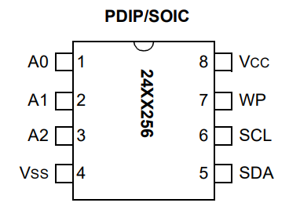

| Lecture: | 26 |
| Objective: | Review basic properties of the I2C interface and review what is expected in the final project proposal. |
I2C
There are a variety of serial communication protocols that exit to handle different application areas. The term protocol means an accepted standard for data interchange. We have already studied RS232 - an asynchronous protocol where two devices share 2 lines (TX and RX) to communicate information. Today we will introduce the Inter IC (I2C) protocol. We will examine the I2C protocol from the lowest level of abstraction, the electrical interface, up to the most complex, which is the interaction between a master and slave device to exchange data.You may remember that RS232 has two signals, RX and TX, both are data lines. There is no clock signal in RS232. Thus, in order to decode a bit stream, the sender and receiver must agree on the duration of a bit period. This is the baud rate. This type of communication is refered to as asynchronous.
I2C is a synchronous communication protocol. This means that I2C has an explicit clock signal shared between sender and receiver. In addition to a clock signal, called SCL, an I2C bus has a data signal called SDA. The term "bus" implies that many devices may be attached to the SCL and SDA signals. One devices on the I2C bus is selected to be the bus master. The bus master is the only device which may manipulate the SCL signal. The device the bus master is communicating with is, by convention, called the slave devices. Both the master and slave may manipulate the SDA line.
Since the SDA signal is driven by both the master and slave, there exists the very real possibility of a bus fault. A bus fault occurs when two devices assert oppsite logical levels on a bus line at the same time. This creates a short circuit; bad things are bound to happen in short order.
To prevent a bus fault, the SCL and SDA outputs on any device that is connected to an I2C bus need to be open drain. A device with an open drain output can ground the output or place its output in a high-impedance state - it cannot drive its output to logic 1. When a devices puts its output in a high-impedance state, it means that the output is connected to nothing - the signal is floating. A pair of external resistors, one each on SDA and SCL, pull the signal lines high when all the devices on the I2C bus put their outputs in the high-impedance state. This configuration is shown in the following image.

Open drain configurations safe guard devices on the bus, because the devices on the bus can never assert conflicting voltages. Thus preventing a short circuit. You can find these pull-up resistors on the SCL and SDA lines on our development board.
A I2C bus typically operates at one of the following clock rates. These rates determine how fast data is communicated across the bus, not how fast the devices will process the data. Often after a slave device is given a task (like storing a page of data) it will enter a busy state where it will refuse any attempt to communicate with it.
- 100kHz - standard mode
- 400kHz - full speed
- 1MHz - fast mode
- 3.2MHz - high speed
| Device Address | Package |
| 1 0 1 0 A2 A1 A0 |  |
For example, if you connected the A2 and A0 pins to Vcc and pin A1 to GND, then the device address of the EEPROM would be "0b1010101". Allowing the address to be configurable, allows a designer (you) to include multiple 24LC256 EEPROMs on a single I2C bus.
Before starting any communication with a device on the I2C bus, the bus-master announces its intention to every device on the bus by asserting a start-condition. The start condition involves pulling the SDA line to logic 0 while the SCL line is at logic 1. After this is done, the bus master will send out a series of 9 clock pulses with one bit associated with each. The first packet of 9-bits is used by the bus-master to select which slave device it wants to exchange data with.
- In its idle state, the SCL and SDA signal are held high.
- To initiate communication on an I2C bus, the bus master asserts a start condition. A start condition, shown in the timing diagram below, means driving SDA low while SCL is high. This tells all the devices on the I2C bus that the bus master will be sending out the device address of the device that the bus master want to communicate with.
- The bus master sends out the 7-bit device address followed by a single bit R/W. The "R" stands for read and the "W" stands for write. The overbar on "W" should be interpreted as a Boolean logic negation, meaning that you elicit the "W" function (write) when the bit value is 0. The lack of an overbar on "R" means that you get the "R" function (read) when this bit is 0.
- If there is a (slave) device on the bus with this device address and its not busy (in hibernation mode), the slave device pulls the data line low during the 9th SCL clock cycle. This is called an acknowledgement (ACK) condition. There are times when a slave device with a atching device address may not assert an ACK. For example, the the device may be preoccupied with a prior task (like an EEPROM is committing a page of data into its non-volatile storage).
- If the bus master sees the ACK condition, then it sends data or commands to the slave device.
- When the bus master has completed its interaction with the slave device, the bus master asserts a STOP condition, pulloing the SDA line high while the SCL line is high. The STOP condition terminates this bus transaction.

The registers in the PIC support I2C. The details are fairly involved, but not beyond the comprehension of a curious mind. Looking at page 242 of our PIC 18F26K22 technical documents revals the following sequence:
| Master broadcasts start condition | SSP2CON2.SEN = 1 |
| Master broadcasts device address | SSP2BUF = 0b1010000 0 |
| Slave acknowledges | SSP2CON2.ACKSTAT is cleared |
| Master transmits upper 8-bits of EEPROM address | SSP2BUF = addr>>8; |
| Slave acknowledges | SSP2CON2.ACKSTAT is cleared |
| Master transmits lower 8-bits of address | SSP2BUF = (addr & 0xFF); |
| Slave acknowledges | SSP2CON2.ACKSTAT is cleared |
| Master transmits data (perhaps many times) | SSP2BUF = data; |
| Slave acknowledges (once for each piece of data) | SSP2CON2.ACKSTAT is cleared |
| Master broadcasts stop condition | SSP2CON2.PEN=1 |
Final Project Proposal
- Cover page
- Need Statement
- General guidelines applied to entire essay.
- Moves from the general to the specific.
- Avoid personal opinions, instead use testimony of experts.
- Does not provide the solution for the problem.
- You should write in the current tense whenever possible.
- Avoid passive voice.
- First Paragraph - You should start by discussing general
information and high level statistics. If you are going to be
using technical terminology later in the needs statement then
introduce it in this first paragraph. You are providing evidence
that there is an unfulfilled need for a technical solution. Do not
talk about your solution - focus on the problem that needs addressed.
- At least 3 statistics motivating or anecdote.
- Explain I/O and behavior of current method.
- Current process, technologies and terminology used later.
- Second Paragraph - Start to introduce the specific scenario
that you are trying to address and the current limitations of
solutions that have been attempted. Do not talk about a solution,
focus on the problem that needs addressed.
- Specific scenario illustrating need
- Illustrate limitation of current method
- Third Paragraph – Short, brings closure to preceding paragraphs.
Do not talk about your solution, focus on the problem that needs
addressed.
- “There is a need for ….”
- General guidelines applied to entire essay.
- Level-0 Description
The level-0 description consists of a block diagram and a paragraph
explaining the input, output and behavior of the block diagram.
Do's
- Keep all evaluations and marked work
- Make a video of your project in action